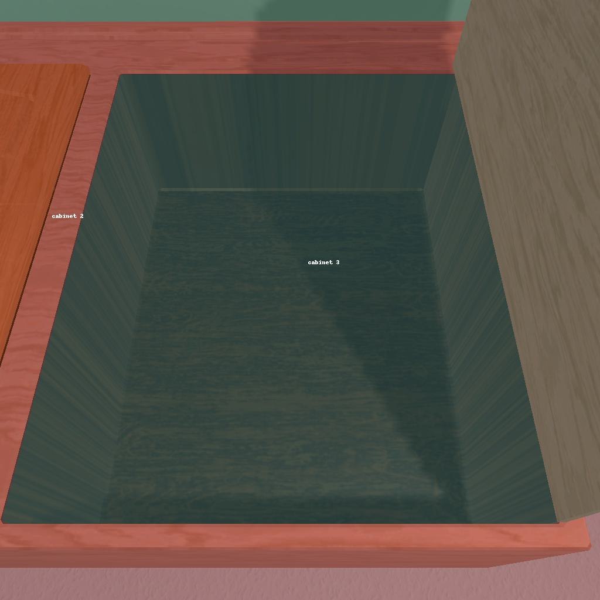

---------------------------------------------------------task: 15---------------------------------------------------------
--------------------------------------------------------------------------------------------------------------------------------------------------------------------
--------------------------------------------------------------------------------------------------------------------------------------------------------------------
Step:--------------------------------------------------------------------------6-------------------------------------------------------------------------------
----------------------------------------
VLM Prompt:
Image1:
Image2:
Image3:
**Instruction**
1. Analyze the provided image to identify all visible household objects, focusing on those relevant to the task description "cool some mug and put it in coffeemachine."
2. Use the analysis of the image and the task hint "The agent must find an object of the desired type, pick it up, go to a fridge, cool the object with the fridge, then find the correct location to place it, and put it down there. The agent does not need to use the fridge button or open the fridge to cool the object, and the agent just needs to do action that is "cool the object with the fridge"." to answer the question: what is the most reasonable action in the choices for the task description "cool some mug and put it in coffeemachine"?
4. Decide and write the answer using the template: The answer is: (i): , where i is the real number. If there is no desired object in the image, search every place based on **Initial Observation** to find the object. And if no one is exactly correct, choose a similar answer.
**Initial Observation**
You are in the middle of a room. Looking quickly around you, you can see cabinet (1-15), fridge (1), countertop (1-4), drawer (1-4), microwave (1), toaster (1), coffeemachine (1), garbagecan (1), sink (1), stoveburner (1-3), sinkbasin (1)
**Answer Choices**
(1): go to cabinet 1
(2): go to cabinet 2
(3): go to cabinet 3
(4): go to fridge 1
(5): go to countertop 1
(6): go to cabinet 5
(7): go to cabinet 6
(8): go to cabinet 7
(9): go to drawer 1
(10): go to drawer 2
(11): go to cabinet 8
(12): go to drawer 3
(13): go to cabinet 9
(14): go to cabinet 10
(15): go to drawer 4
(16): go to microwave 1
(17): go to cabinet 11
(18): go to toaster 1
(19): go to cabinet 12
(20): go to cabinet 13
(21): go to cabinet 14
(22): go to cabinet 15
(23): go to countertop 2
(24): go to coffeemachine 1
(25): go to garbagecan 1
(26): go to countertop 3
(27): go to countertop 4
(28): go to sink 1
(29): go to stoveburner 1
(30): go to stoveburner 2
(31): go to stoveburner 3
(32): go to sinkbasin 1
(33): open cabinet 4
(34): close cabinet 4
(35): examine cabinet 4
**Answer**
Let's think step by step by following the instructions.
----------------------------------------
----------------------------------------
Original Response:
The first step is to find a mug to cool. Since none of the images show the inside of the cabinets, we must search based on the Initial Observation which lists all the cabinets in the room. Therefore, we should check the cabinets for a mug.
The next step is to cool the mug with the fridge. Based on the task hint, we do not need to interact with the fridge physically, but simply perform the action of cooling. Therefore, we do not need to open the fridge or use its button.
Finally, we need to put the cooled mug in the coffeemachine. Since we do not see a coffeemachine in any of the provided images, we must rely on the Initial Observation that states there is a coffeemachine (1).
Based on this analysis, the most reasonable action from the choices would be to first find a mug. Since we cannot see inside the cabinets, we should select an action to go to a cabinet. The answer is: (1): go to cabinet 1. If the mug is not found in cabinet 1, we should continue searching the other cabinets as listed in the Initial Observation until the mug is found, cooled with the fridge, and then placed in the coffeemachine.
----------------------------------------
----------------------------------------
>>> Refine Original VLM Response and Get Pure Action: go to cabinet 1
----------------------------------------
-----------------------------------------------------------------
Running time: 12.61866307258606 seconds
Total Money: 9.21264
-----------------------------------------------------------------
-----------------------------------------------------------------
Text Observation:You arrive at loc 0. The cabinet 1 is closed.
-----------------------------------------------------------------
UNSUCCEED